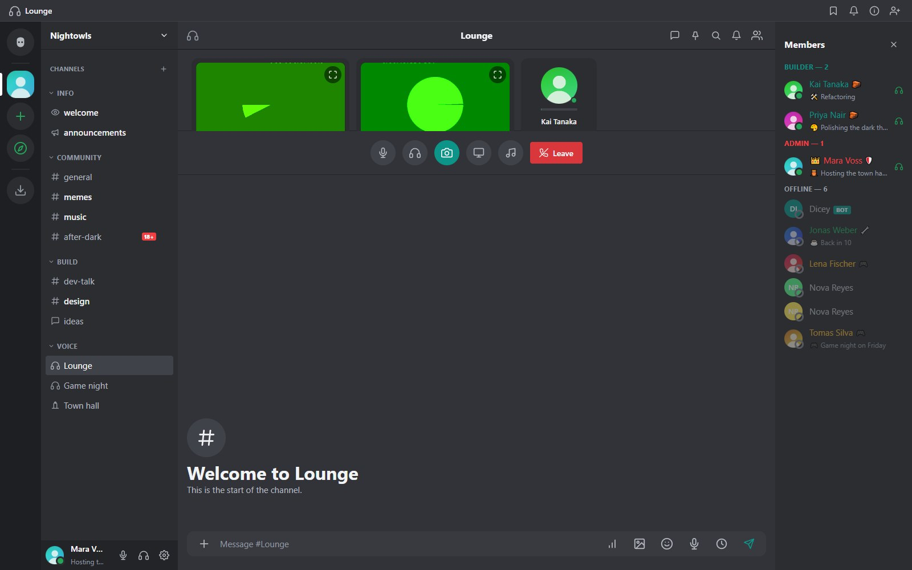

Hang, videó és színpadok
Hogyan működnek a hívások, minőség-előbeállítások, kamera és képernyőmegosztás, színpadcsatornák, zajszűrés és hibaelhárítás.

Hogyan működnek a hívások
A hang és videó közvetlen WebRTC. Minden résztvevő közvetlenül kapcsolódik minden másikhoz, a szerver pedig csak a jelzéseket továbbítja ugyanazon a WebSocketen, amelyet a csevegéshez is használunk. Nincs médiaszerver, amit üzemeltetni kellene.
Mivel teljes hálóról van szó, mindenki egyszer tölti fel a streamjét minden más résztvevőnek. Egy nagyjából nyolc vagy több fős, videós hívás sok feltöltési sávszélességet kér mindenkitől. A csak hangos szobák sokkal tovább skálázódnak.
Csatlakozás
Kattints egy hangcsatornára és nyomd meg a Csatlakozás a hangcsatornához gombot. Engedélyezd a mikrofonhozzáférést, amikor a böngésző kéri. A vezérlőkkel némíthatsz, süketíthetsz, bekapcsolhatod a kamerát, megoszthatod a képernyődet, megnyithatod a hangpultot vagy kiléphetsz. A hívásokhoz HTTPS vagy localhost kell, a különböző hálózatokon lévőknek pedig STUN- vagy TURN-szerver (lásd: Konfiguráció).
Minden résztvevő csempéjén van beszédjelző gyűrű és élő szintcsík. Mindenkinek saját hangerőcsúszkája van a csempéjén.
A résztvevők rácsa nagy csempéket használ, és görgethető, ha megtelik a szoba. Egy hangcsatornában a hívási panel a szöveges csevegés fölött van; a kettő közötti elválasztót húzva fel vagy le, a szobának vagy a csevegésnek adhatsz több helyet. A magasságot a böngésző megjegyzi. A színpadcsatornák ugyanezeket a nagy, görgethető csempéket használják. Telefonon a hívás egy teljes képernyős, kétoszlopos csempenézet, a szöveges csevegés egy koppintásra van.
Minőség-előbeállítások
Az előbeállítást a létrehozó választja a csatorna létrehozásakor. Utána rögzül: módosításához töröld a csatornát és hozz létre egy újat.
| Előbeállítás | Mintavétel | Bitráta | Mire jó |
|---|---|---|---|
| Mobil | 8 kHz | 12 kbps | Gyenge kapcsolatok és mobilnetes telefonok |
| Alacsony | 16 kHz | 24 kbps | Beszéd gyenge vonalon |
| Közepes | 24 kHz | 48 kbps | Az alapértelmezett |
| Magas | 48 kHz | 96 kbps | Tiszta beszéd |
| HD / Zene | 48 kHz sztereó | 192 kbps | Zene és megosztott hang |
Kamera és képernyőmegosztás
A kamera és a képernyőmegosztás külön csempe, így mindkettőt mutathatod egyszerre. Bármely videócsempének van teljes képernyő gombja. Az asztali alkalmazás a rendszer képernyő- és ablakválasztóját használja; böngészőben a böngésző saját választója jelenik meg. Telefonon a kameránál van váltás gomb, a képernyőmegosztás pedig nem érhető el.
Színpadcsatornák
A színpad előadókra és hallgatóságra osztott hangszoba. A hallgatóság néma, amíg egy előadó vagy moderátor meg nem hívja. A hallgatók felemelhetik a kezüket; a moderátor beszélni hívhatja őket, vagy visszahelyezheti a hallgatósághoz. A színpad jól működik városházi ülésekhez és bejelentésekhez.
Moderátori eszközök
A Tagok moderálása jogosultsággal rendelkezők mindenki számára némíthatnak valakit a csempéjéről. A célszemély kliense leállítja a hang küldését, a saját némításfeloldó gombja pedig le van tiltva, amíg egy moderátor fel nem oldja; egy jelvény látszik a csempén. Médiaszerver nélkül ez a célkliens utasításával működik, mint más chatalkalmazásokban.
Privát hívások
A privát és csoportos privát üzenetek is támogatnak hívásokat. Egy privát hívás sosem jelenik meg a taglista „hívásban van” jelzőjén vagy a privát beszélgetés tagjain kívül bárhol máshol.
Hangpult
A szervernek lehet rövid hangklipekből álló hangpultja, amelyet a jogosult tagok lejátszhatnak a hívásba. A Szerverbeállítások, Hangtár alatt kezelheted.
Zajszűrés
A Beállítások, Hang és videó, Fejlett zajszűrés (RNNoise) a mikrofonodat egy WebAssemblyre fordított kis neurális hálózaton engedi át, ami eltávolítja a billentyűzet-, ventilátor- és háttérzajt. A saját eszközödön működik, nagyjából tíz milliszekundum késleltetést ad, és alapból ki van kapcsolva. A modul (kb. 5 MB) csak akkor töltődik le, amikor először indul hívás bekapcsolt állapotban. Ha nem tud elindulni, a hívás egyszerűen nélküle folytatódik.
Hívások hibaelhárítása
| Tünet | Mit ellenőrizz |
|---|---|
| Nincs mikrofonkérés | Az oldal nem HTTPS-en vagy localhoston van |
| LAN-on csatlakozik, hálózatok között nem | Kapcsold be a beépített STUN/TURN szervert (setup-turn.bat, vagy Adminpanel, Hívások), és irányítsd át a portokat a routeren, lásd: STUN és TURN |
| Valakit nem hallani | A böngészője letiltotta a mikrofont, vagy rossz a bemeneti eszköze az eszközválasztóban |
| Szaggatott hang nagy hívásban | Csökkentsd az előbeállítást, vagy kérd meg az embereket, hogy kapcsolják ki a kamerát |